• Open a web browser, enter a URL http://localhost to access XAMPP dashboard
• Select phpMyAdmin tab
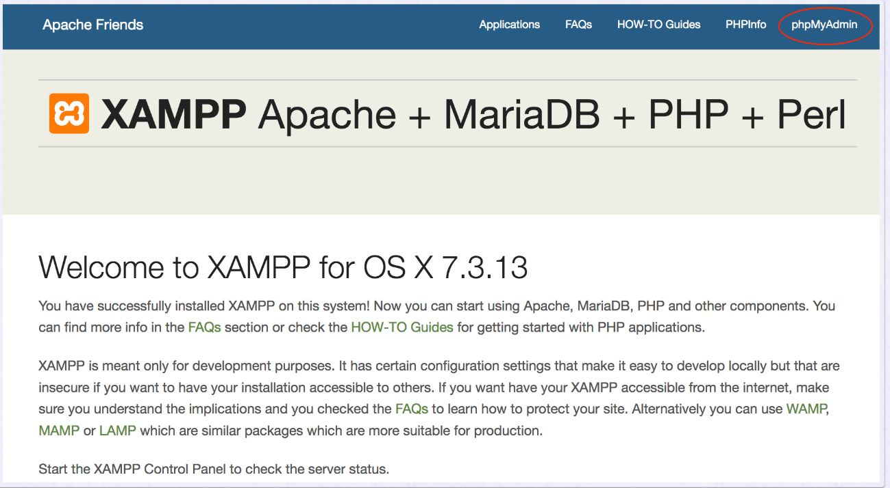
OTHER WAY TO ACCESS
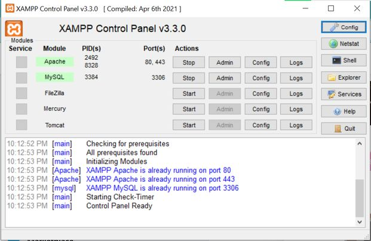
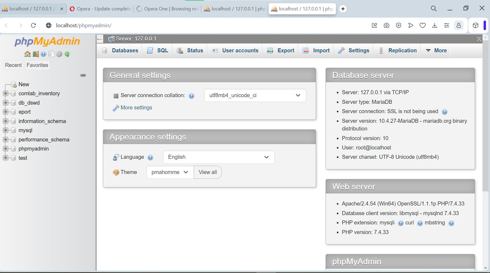
• Alternatively, you may access phpMyAdmin via the XAMPP manager / controller, click Go to Application button to access XAMPP dashboard.
• The main page should look similar to the following
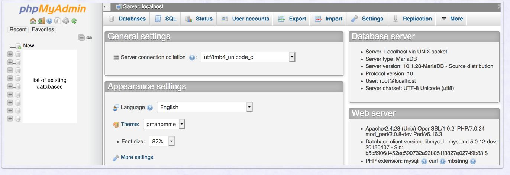
• On the phpMyAdmin screen, select User accounts tab.Select Add user account link.
• Enter user name and password of your choice. Note: do not use any of your official
• accounts such as UVA account.
• Select Local for Host
• name Check Create database with same name and grant all privileges
• Check Grant all privileges on wildcard name (username\_%)
• Check Check all for Global privileges
• At the bottom-right of the screen. click the Go button
• Do not change or update the root account. If you may forget or need to reset your password, you can use the root account to manage users.
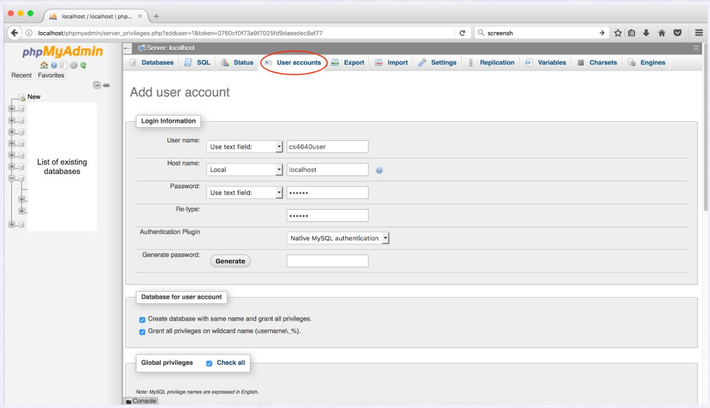
• To verify that the account has been created, go to User accounts tab. You should see the newly created user account (as shown below).
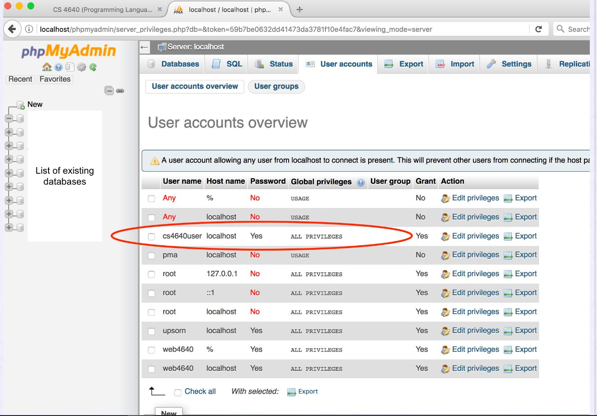
• Let's create a guestbook database. To create a database, there are several options.
• You may use the Create database feature.
• On the phpMyAdmin screen, select the Databases tab. Alternatively, you may click the New link on the left panel.
• Under the Create database, enter a Database name
• Click the Create button
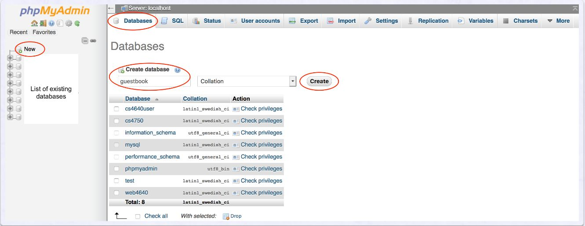
• You may run the SQL command to create a database.
• On the phpMyAdmin screen, select the SQL tab
• Enter CREATE DATABASE guestbook; Note: SQL commands are not case sensitive.
•This example uses uppercase and lowercase simply to make it easy to read.
• Click the Go button to run the command.
• For Mac users, you may press Control+Enter to run
• For Windows users, you may press Control+Enter to run
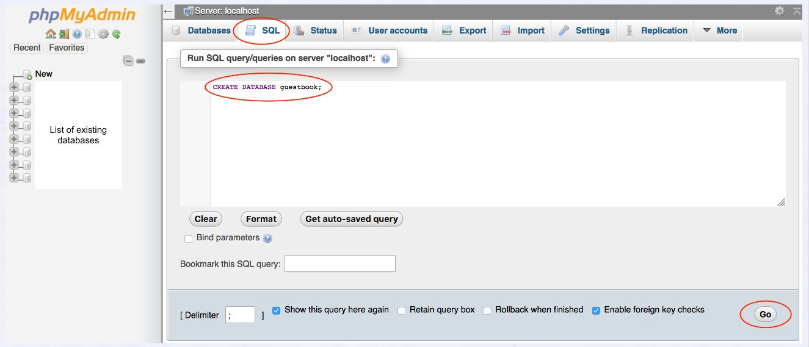
• Let's create a table named entries.
• To create a table, there are several options. You may use the Create table feature.
• On the phpMyAdmin screen, select the guestbook database. Select the Structure tab.
• Under the Create table, enter a table name and the number of columns.
• Click the Go button. This will prompt you to enter the column information.
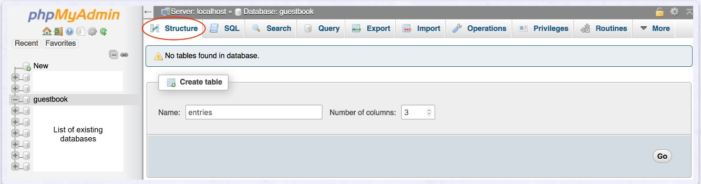
• You may run the SQL command to create a table.
• On the phpMyAdmin screen, select the SQL tab
• Enter the following code
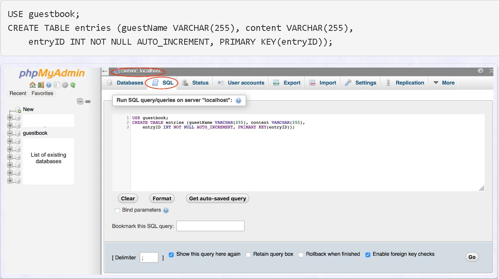
To insert data into a table, there are several options.
You may use the Insert feature.
• On the phpMyAdmin screen,
• select the guestbook database, select the entries table. Select the Insert tab.
• For each record of data to be inserted, enter the value for each column.
• Click the Go button.
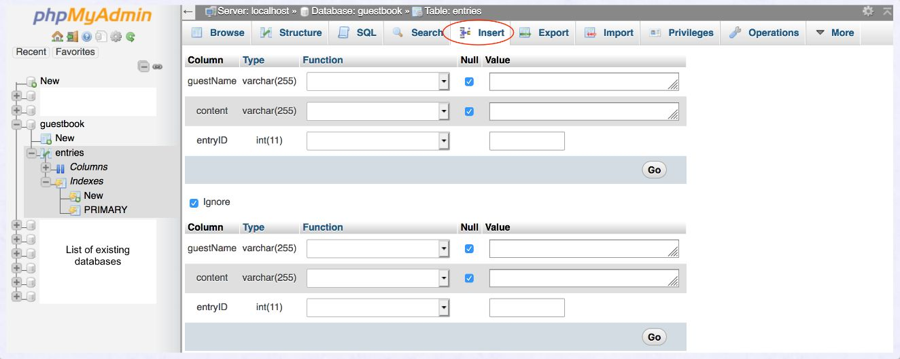
You may run the SQL command to insert data
• On the phpMyAdmin screen, select the guestbook database,
• select the entries table. Select the SQL tab
• Enter the following code
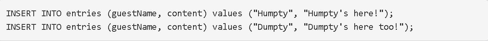
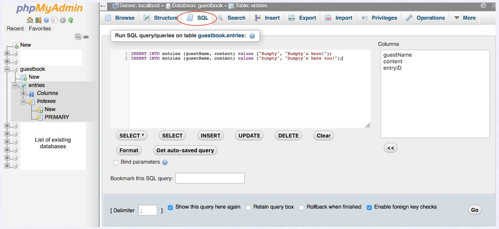
To retrieve data from a table, there are several options.You may use the Browse feature.
• On the phpMyAdmin screen, select the guestbook database, select the entries table.
• Select the Browse tab. This will display all existing records of the table.
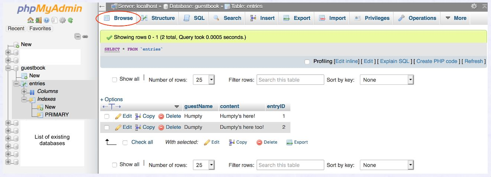